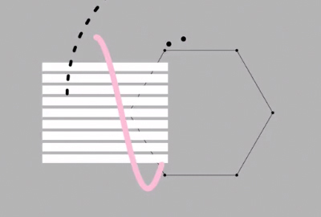

favorite
internet
thing.
—
 Sum Hing Carton Box Factory ⤢
Sum Hing Carton Box Factory ⤢http://boxx.hk
The site has very interesting transitions and link navigation system. The images are the site map that guide the users around, and each image shifts to the front when in hover state. Besides using just the images, text also appears on hover to further explain each selection.
 Robby Leonardi Interactive Portfolio ⤢
Robby Leonardi Interactive Portfolio ⤢http://www.rleonardi.com/interactive-resume/
This site is VERY interactive, inviting the viewers to use the arrow keys or scroll through the website. While scrolling, the fixed character moves as well to show movement throughout. It's almost as if the site is a mini game/video itself with all the transitions and animations.
Interior Design by Decade ⤢
https://www.harveywatersofteners.co.uk/history-interior-design
This website incorporates interesting page-scrolling animation to show the changes of interior design over time. The side navigation is also simple and easy to use besides direct scrolling. I love the simplicity of the web page, including the graphics as well as the information that is presented.
https://www.harveywatersofteners.co.uk/history-interior-design
This website incorporates interesting page-scrolling animation to show the changes of interior design over time. The side navigation is also simple and easy to use besides direct scrolling. I love the simplicity of the web page, including the graphics as well as the information that is presented.
Interior Design by Decade ⤢
http://www.antro.ca/en/
This creative agency has a very modern and responsive design. Their side navigation is what caught my eye. With a very simple center aligned accordion, even on hover it auto center-align itself according to browser's height. It's simple yet very functional that has a great user interface.
http://www.antro.ca/en/
This creative agency has a very modern and responsive design. Their side navigation is what caught my eye. With a very simple center aligned accordion, even on hover it auto center-align itself according to browser's height. It's simple yet very functional that has a great user interface.
Letters, Inc. ⤢
http://letters-inc.jp/
This website has a very elegant and eye-catching vector art that is animated. The composition of the webpage is simple, with smooth transitions as well as the options to switch between color schemes.
http://letters-inc.jp/
This website has a very elegant and eye-catching vector art that is animated. The composition of the webpage is simple, with smooth transitions as well as the options to switch between color schemes.

Patatap ⤢
http://www.patatap.com/
This interactive website allows users to click on different keys to create different sound and visual animations. The website itself is simple, and the graphics that are used for each different beat is visually attractive as well. It's fun to create different beats and remixes with the site, and they also provide other users' creation.
http://www.patatap.com/
This interactive website allows users to click on different keys to create different sound and visual animations. The website itself is simple, and the graphics that are used for each different beat is visually attractive as well. It's fun to create different beats and remixes with the site, and they also provide other users' creation.
Paul Macgregor ⤢
http://p--m.co/
This is Paul Macgregor's portfolio website. It's fairly simple in terms of design and content. But on the home page he incorporated the animation of different block elements falling down with physics included which was pretty interesting. The blocks were active elements as well.
http://p--m.co/
This is Paul Macgregor's portfolio website. It's fairly simple in terms of design and content. But on the home page he incorporated the animation of different block elements falling down with physics included which was pretty interesting. The blocks were active elements as well.
Lois Jeans ⤢
http://www.loisjeans.com/en/es/home
This is a website showcasing a fashion brand. The homepage of the site has a full width image grid that is also responsive. It's interesting to see the different screen breaks and layout changes as the browser size is changed. It's simple and functional that works across all screen sizes.
http://www.loisjeans.com/en/es/home
This is a website showcasing a fashion brand. The homepage of the site has a full width image grid that is also responsive. It's interesting to see the different screen breaks and layout changes as the browser size is changed. It's simple and functional that works across all screen sizes.
Audioharmôme ⤢
http://audioharmome.fr/
Audioharmôme is a French website, so quite frankly I'm not sure if it's a personal website or a design studio's website. However, this website has a very cool transition between different sections of the website. So ultimately different information are on different sides of the "cube".
http://audioharmome.fr/
Audioharmôme is a French website, so quite frankly I'm not sure if it's a personal website or a design studio's website. However, this website has a very cool transition between different sections of the website. So ultimately different information are on different sides of the "cube".
Lexus Hybrid Zero ⤢
http://lexus.co.kr/hybridzero/space/#!/all
This is Lexus's Hybrid Zero website in Korean. It has an intense z-index-changing scrolling parallax implemented. So as you scroll, images become bigger and the ones in the front disappears to show the ones in the back. I've never seen another site code parallax this way, which reminds me of the opening credit of Star Wars.
http://lexus.co.kr/hybridzero/space/#!/all
This is Lexus's Hybrid Zero website in Korean. It has an intense z-index-changing scrolling parallax implemented. So as you scroll, images become bigger and the ones in the front disappears to show the ones in the back. I've never seen another site code parallax this way, which reminds me of the opening credit of Star Wars.
Koalas To The Max ⤢
http://www.koalastothemax.com//
This experimental website is consisted of purely dots. When you hover over these dots, they are divided into 4 more dots, and 4 more, and so forth. By the end when all the dots are divided into the smallest they can be, an image of koala becomes visible.
http://www.koalastothemax.com//
This experimental website is consisted of purely dots. When you hover over these dots, they are divided into 4 more dots, and 4 more, and so forth. By the end when all the dots are divided into the smallest they can be, an image of koala becomes visible.
Jova Construction ⤢
http://jovaconstruction.com/
This is a website with a fairly simple design. What caught my eyes were the transition between pages, and even when the website is static without user's interaction, there would still be timed animations on the website.
http://jovaconstruction.com/
This is a website with a fairly simple design. What caught my eyes were the transition between pages, and even when the website is static without user's interaction, there would still be timed animations on the website.
Rally Interactive ⤢
http://rallyinteractive.com/
This is a simple website with a very interesting way of displaying image gallery. It has svg shape overlay that has cool transition on hover.
http://rallyinteractive.com/
This is a simple website with a very interesting way of displaying image gallery. It has svg shape overlay that has cool transition on hover.
Jova Construction ⤢
http://unfold.no/
At first it seems like any other design portfolio. But what I found interesting was the fact that the home page of the website is at the middle of the site layout, so you have the option to scroll up and down and not just stuck to scroll down.
http://unfold.no/
At first it seems like any other design portfolio. But what I found interesting was the fact that the home page of the website is at the middle of the site layout, so you have the option to scroll up and down and not just stuck to scroll down.
Wind Map ⤢
http://hint.fm/wind/
This website serves as a live version of the wind current throughout United States. It's very simple yet informal. The wind currents are probably generated by java, but it is amazing how it allows zooming function as well without losing the quality.
http://hint.fm/wind/
This website serves as a live version of the wind current throughout United States. It's very simple yet informal. The wind currents are probably generated by java, but it is amazing how it allows zooming function as well without losing the quality.